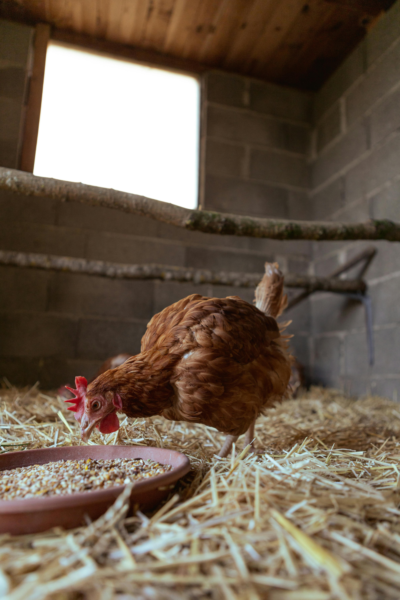

I have learned a few things in building chicken coops. I would like to go over two key items. Keeping the chickens and some ideas about coop design. In chicken keeping there are two strategies hobbiest use Free Range and Coop-Raised. They are similar but you need to weigh the pros and cons of each system.
Free Range means your allowing your chicken outside of the coop and run. The pros are the chickens will eliminate insects, they will get a more natural diet. They will naturally spread their feces over your yard fertilizing your grass. The cons are the odds of predators killing your chicken greatly increases. Chickens eat plant life. Your landscaping and gardens are fair game and they will eat your plants.
The second style is Coop-Raised. You need a coop regardless of the style of chicken keeping you chose, but you must build a run for coop-raised chickens. The main positive is your chickens will be safe from predators if you build the run well. You also will be able to control your chickens diet better. If you want to switch to free-range system it is easier to make the switch if you start with coop-raised. The con are it will cost more to build a run. There are natural behaviors a chicken commits that a run doesn’t provide without purposeful intent done by the owner. Like scratching grasses, hunting bugs, dirt baths, distancing from the other chicken, and general exploring. The number of chickens you keep will also be limited by the size of run you have regardless of coop size. The rule of thumb is one chicken for every ten square feet of run.
I would also like to get a better feel for what I can learn in Computer Applications.
Second Page